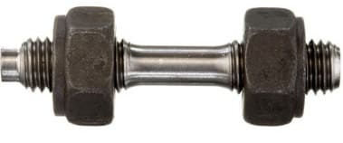

DIN 2510 Шпилька для фланцев
Стандарт
DIN 2510
Цена от
1 417,00 ₽
Размерный ряд
Производство на заказ
Шпильки резьбовые » DIN 2510 Шпилька для фланцевых соединений с двумя гайками
Варианты и размеры (10)
| Наименование | Размер | Длина, мм | Материал | Покрытие | Цена |
|---|---|---|---|---|---|
| DIN 2510 Шпилька для фланцев M12 L=8мм | M12 | 8 | 2 040,00 ₽ | ||
| DIN 2510 Шпилька для фланцев M16 L=12мм | M16 | 12 | 2 650,00 ₽ | ||
| DIN 2510 Шпилька для фланцев M20 L=15мм | M20 | 15 | 3 270,00 ₽ | ||
| DIN 2510 Шпилька для фланцев M22 L=16мм | M22 | 16 | 3 571,00 ₽ | ||
| DIN 2510 Шпилька для фланцев M24 L=18мм | M24 | 18 | 3 932,00 ₽ | ||
| DIN 2510 Шпилька для фланцев M27 L=20мм | M27 | 20 | 4 442,00 ₽ | ||
| DIN 2510 Шпилька для фланцев M30 L=23мм | M30 | 23 | 5 037,00 ₽ | ||
| DIN 2510 Шпилька для фланцев M33 L=25мм | M33 | 25 | 5 595,00 ₽ | ||
| DIN 2510 Шпилька для фланцев M36 L=27мм | M36 | 27 | 6 175,00 ₽ | ||
| DIN 2510 Шпилька для фланцев M39 L=30мм | M39 | 30 | 6 855,00 ₽ |